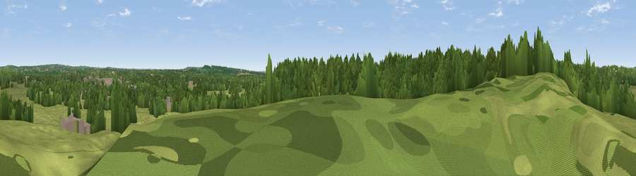

Green Hill
#41519 in England · top 72% of its area beats it · near RomseyThe view, rendered

A 360° render of this exact spot computed from the terrain model, tree cover and land cover — summer colours, afternoon light, calibrated against photographs of famous viewpoints. Real trees, hedges and buildings will differ in detail.
The panorama
Grey silhouette: terrain skyline in each direction (720 bearings, Earth curvature and refraction included). Dashed green: skyline with trees (+15 m) and buildings (+8 m) as obstacles. Blue strip: how far the ground is visible on each bearing.
Where the view opens
Wedge length = distance to the farthest visible ground on that bearing (vegetation-aware). Rings at 10, 25 and 50 km.
What fills the view
45% woodland · 45% grassland · 5% cropland · 5% built-up
Angular shares of the visible panorama (visual magnitude), not map area. Landscape diversity 0.45 (0–1 Shannon).
Key numbers
More beautiful places nearby
The staircase of upgrades: each row has a higher view potential than everything closer. Driving times are estimates from straight-line distance, calibrated against real road routing — check an actual route before setting out.
| Place | Direction | Drive | Score |
|---|---|---|---|
| Viewpoint near Sherfield English | WNW · 3 km | ~8 min | 36.8 |
| Viewpoint near Awbridge | NW · 4 km | ~9 min | 37.2 |
| Viewpoint near Timsbury | NNE · 4 km | ~9 min | 39.0 |
| Viewpoint near Upton | ESE · 4 km | ~10 min | 46.3 |
| Viewpoint near Bramshaw | WSW · 9 km | ~18 min | 46.6 |
| Viewpoint near West Dean | NW · 9 km | ~18 min | 53.1 |
| Violet Hill | NE · 10 km | ~19 min | 55.7 |
| Viewpoint near West Dean | WNW · 10 km | ~19 min | 57.9 |
50.98377, -1.51347 · source: osm peak · position refined by local search. Computed location — check access rights before visiting.